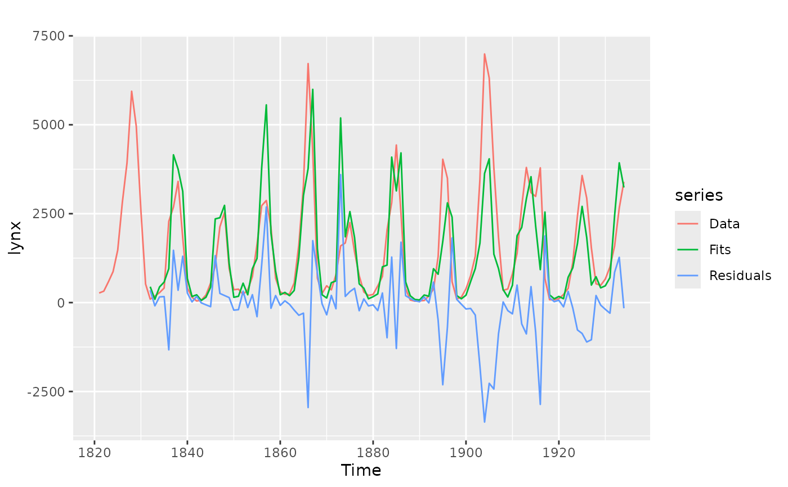

CVar computes the errors obtained by applying an autoregressive
modelling function to subsets of the time series y using k-fold
cross-validation as described in Bergmeir, Hyndman and Koo (2015). It also
applies a Ljung-Box test to the residuals. If this test is significant
(see returned pvalue), there is serial correlation in the residuals and the
model can be considered to be underfitting the data. In this case, the
cross-validated errors can underestimate the generalization error and should
not be used.
CVar( y, k = 10, FUN = nnetar, cvtrace = FALSE, blocked = FALSE, LBlags = 24, ... )
Arguments
| y | Univariate time series |
|---|---|
| k | Number of folds to use for cross-validation. |
| FUN | Function to fit an autoregressive model. Currently, it only works
with the |
| cvtrace | Provide progress information. |
| blocked | choose folds randomly or as blocks? |
| LBlags | lags for the Ljung-Box test, defaults to 24, for yearly series can be set to 20 |
| ... | Other arguments are passed to |
Value
A list containing information about the model and accuracy for each fold, plus other summary information computed across folds.
References
Bergmeir, C., Hyndman, R.J., Koo, B. (2018) A note on the validity of cross-validation for evaluating time series prediction. Computational Statistics & Data Analysis, 120, 70-83. https://robjhyndman.com/publications/cv-time-series/.
See also
Examples
#> Series: lynx #> Call: CVar(y = lynx, k = 5, lambda = 0.15) #> #> 5-fold cross-validation #> Mean SD #> ME -7.399047e+01 209.5564319 #> RMSE 1.008670e+03 255.8655323 #> MAE 6.679454e+02 172.1851061 #> MPE -2.689215e+01 51.6590771 #> MAPE 6.685048e+01 36.9979202 #> ACF1 -4.401883e-03 0.1321075 #> Theil's U 1.058446e+00 0.2532233 #> #> p-value of Ljung-Box test of residuals is 0.1454124 #> if this value is significant (<0.05), #> the result of the cross-validation should not be used #> as the model is underfitting the data.#> $model #> Series: y #> Model: NNAR(11,6) #> Call: FUN(y = y, lambda = 0.15, subset = trainset) #> #> Average of 20 networks, each of which is #> a 11-6-1 network with 79 weights #> options were - linear output units #> #> sigma^2 estimated as 0.09578 #> #> $accuracy #> ME RMSE MAE MPE MAPE ACF1 Theil's U #> Test set 76.85484 1185.761 715.7763 2.319121 53.37024 0.03753834 1.303367 #> #> $testfit #> Time Series: #> Start = 1821 #> End = 1934 #> Frequency = 1 #> [1] NA NA NA NA NA NA #> [7] NA NA NA NA NA 287.19570 #> [13] 184.21319 282.91496 409.19591 2192.03798 2877.01566 3417.18379 #> [19] 2022.21190 1599.00236 149.74328 47.64919 67.24354 211.40517 #> [25] 532.11622 1052.86003 2092.77344 2549.59356 987.47307 376.91182 #> [31] 352.80269 246.88152 358.68024 741.97139 1650.64995 2654.73638 #> [37] 3219.93670 2165.79913 730.32193 301.26331 365.38976 236.18078 #> [43] 522.28826 1577.03123 3280.64184 5675.68459 4409.60183 3106.08730 #> [49] 250.89901 424.84849 370.97720 762.50398 1617.20850 1772.41724 #> [55] 2325.21048 2529.90192 767.97707 296.31146 171.03166 258.69082 #> [61] 443.41226 762.85045 1975.78216 2924.22642 4344.50207 2604.72843 #> [67] 1570.87303 149.85585 40.30856 50.70034 66.53577 139.63290 #> [73] 377.87729 585.66517 3965.98802 3512.01270 1134.45445 106.48592 #> [79] 155.49786 365.45650 770.68567 1319.06535 3391.92016 3441.94282 #> [85] 5951.02581 3771.51529 1781.75798 370.88750 382.15521 789.27459 #> [91] 1395.54103 2761.97996 3672.80095 3164.25897 2874.32795 3572.64583 #> [97] 672.93392 84.42843 53.25289 106.46359 222.59445 411.01095 #> [103] 1147.65877 1042.18123 3431.96896 2909.09444 1483.21391 498.12837 #> [109] 454.26605 707.99385 1175.52808 1648.48634 2659.55350 3352.11427 #> #> $testset #> [1] 1 6 8 9 10 12 20 30 41 48 56 59 67 68 72 74 77 84 99 #> [20] 104 110 111 112 #>library(ggplot2) autoplot(lynx, series="Data") + autolayer(modelcv$testfit, series="Fits") + autolayer(modelcv$residuals, series="Residuals")#> Warning: Removed 11 rows containing missing values (geom_path).#> Warning: Removed 11 rows containing missing values (geom_path).